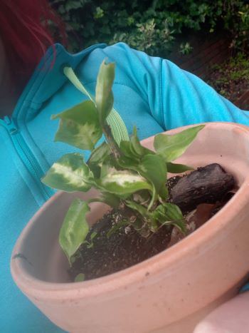

Running a high level competitive tournament and one of the leading players in the tournament was an 14year old, I was approached by one of the team members working on the floor who believed that the person in question had marked their sleeves to gain an advantage. After an investigation and examination of the sleeves it was deemed to definitely be marked sleeves though not in a determinable pattern. After taking 15 minutes to discuss and evaluate I decided that this fell under the category of trying to gain an advantage and had to remove the person from the tournament.
Cue one very unhappy 14 year old and one rather angry mother who accused me of assuming their child was cheating. I had to print off a large pile of supporting documents and reassure the mother that I had to assume their child was cheating even if it wasn’t the case due to the rules that were given to me. It ended up being a 2 hour discussion which I had to fit in around my 12 hour working day and while I eventually had both the mother and child understand why the rulings were conducted in the fashion they were it was a very large commitment that I could have delegated to others. I felt like the mother would not have taken it kindly if I had delegated, even though I sorely missed those 2 hours of sleep.
As a NZ born human I feel like we are raised with a bit more of a community feeling than the large portions of westernised culture. I was raised on a commune during the initial development stages of childhood. Food was gathered by the people and cooked on a communal fire that was left to people to feed themselves from, this meant that I had an appreciation for the effort of providing a stable food source that is often underappreciated in modern society.
My values focus around this concept of we are all equal and capable of love and caring for all those around us and I have heavily retained these ideals into adulthood. I value hard work because I’ve seen it in action and the result of it, though I also value the hidden work of the mind. My culture has been a segmented mix and match of the culture I have been around during growing up. I admire and value different aspects of culture as I believe that no one culture has a “correct” way of thinking but rather an adaptation to the environment it is born from and the people who make it happen and continue.